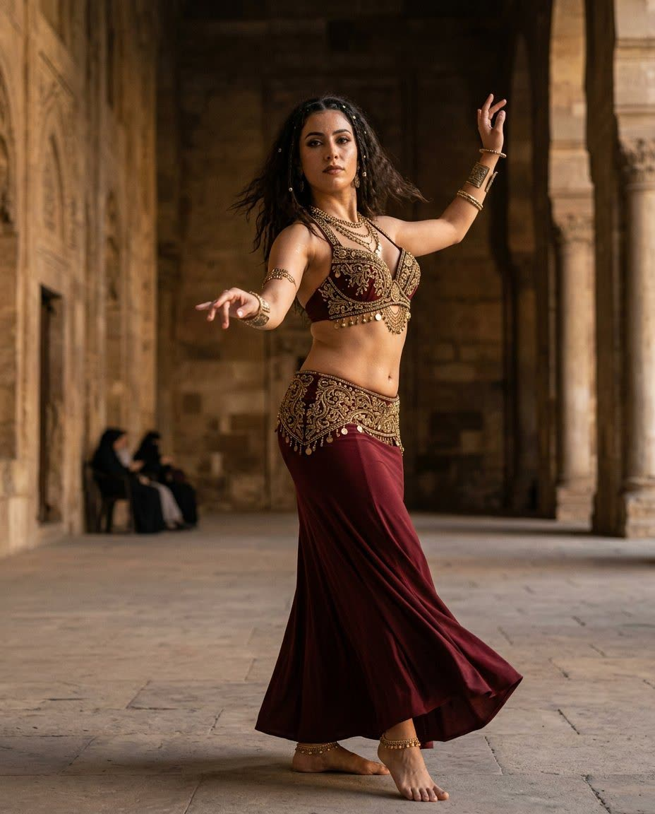

Luxury Belly Dancer Editorial in Historic Hall
WRD-001WardrobeNano Banana Proby dreamy digital artsOctober 4,

A detailed prompt for generating a photorealistic luxury fashion editorial featuring an adult belly dancer in a grand Mediterranean or Middle Eastern stone hall. The prompt emphasizes cultural authenticity, sophisticated styling with deep oxblood and antique gold elements, dynamic movement, and realistic lighting and textures.
Prompt
Create a photorealistic luxury fashion editorial of an adult professional belly dancer inside a grand historic Mediterranean or Middle Eastern stone hall. Keep the cultural foundation recognizable and sophisticated rather than fantasy, theatrical cosplay, or costume-pageant styling. She wears an exceptionally crafted deep oxblood dance ensemble with a structured embroidered top and a high-waisted fitted hip line flowing into a long, fluid skirt. Dense antique-gold filigree, fine beadwork, small coins, and restrained metallic embroidery concentrate around the neckline, waist, and hips, becoming lighter through the skirt. Add layered gold necklaces, sculptural cuffs, bangles, earrings, and delicate anklets. The clothing should look expensive, handmade, secure, and designed for real movement rather than overloaded decoration. Capture her between movements rather than performing a textbook pose. Her hips remain nearly square to camera while the ribcage turns slightly away, creating a strong spiral through the waist. Weight settles into one leg as the opposite hip releases forward. One arm extends toward the camera with relaxed articulated fingers while the other rises beside her head. Long dark textured hair, threaded with a few subtle braids and tiny metallic details, carries residual motion around her shoulders. Photograph from slightly below waist height, close enough for her presence to dominate while retaining the full figure and architectural scale. She looks just past the lens with focused, self-possessed intensity. Tall carved arches and weathered stone columns recede behind her into warm shadow. A few distant seated figures appear only as soft silhouettes, suggesting a private performance without becoming subjects. Golden late-afternoon light enters from one side, grazing her skin, embroidery, jewelry, and moving fabric while the hall falls progressively darker behind her. Preserve pores, fine hair, fabric weight, realistic metal reflections, subtle perspiration, natural anatomy, and restrained cinematic grain. The final image should feel like an established fashion photographer documented a formidable dancer in a real historic space: culturally grounded, sensual, commanding, tactile, and unmistakably editorial. No fantasy motifs, stage scenery, generic harem styling, excessive ornament, plastic skin, CGI polish, logos, text, or watermarks.
Tags: fashion